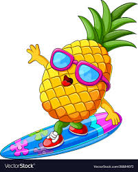
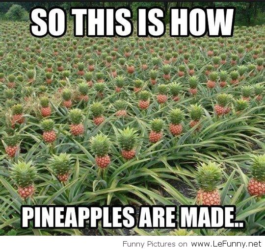

You can use pineapple leaves to get MORE PINEAPPLES!!
Pineapples can break down proteins so they can tenderize meat making them EVEN BETTER!!
1/3 of the worlds pineapples come from Hawaii, meaning that you an go there for a PINEAPPLE TOUR!!
Pineappples are made of thousands of tiny little pineapples so by eating one, you're eating THOUSANDS!!
They take 18-20 months to harvest but IT'S WORTH THE WAIT!!
They were discovered by Christopher Columbus, an ABSOLUTE LEGEND!!
They ripen faster UPSIDE DOWN, so you can get more QUICKER!!

Funny pineapple joke 
For the toasted coconut
100g Fresh Coconut Flesh
2 tsp sunflower oil
For the curry
A Peeled Thumb-sized Piece of Ginger
6 Peeled Garlic Cloves
1.5 tablespoon of Mild Curry Powder
100ml of Sunflower Oil
7 Curry Leaves
1 Cinnamon Stick
1 Star Anise
3 Cardamom Pods
6 Cloves
6 Thinly Sliced Shallots
3 Tablespoon of Taramind Paste
1 Peeled, Cored, Cut... PINAPPLE!!!!!!!!!!!!!!!!
1 Tablespoon of Palm sugar or Light Brown Sugar
400ml of Full-Fat Thick Coconut Milk
24 Peeled Large Raw King Prawns
A Handful of Coriander Leaves and Cooked White or Brown Rice to serve
2. Finely grate or pound the ginger and garlic together using a pestle and mortar. Make a loose curry paste by adding 75ml water to the curry powder. Heat the oil in the wok until it’s just starting to smoke, then throw in the curry leaves, cinnamon stick, star anise, cardamom pods and cloves and cook for 1 min until fragrant.
3. Add the shallots and ginger and garlic paste, cook for around 7 mins until softened and starting to brown, then add the curry powder paste. This is the most important part of making the curry. Ideally, cook over a very low heat and wait until the oil separates and bubbles over the paste, around 10-12 mins. Scrape the bottom of the pan occasionally to remove the crust.
4. When the oil has come to the top, add the tamarind paste, pineapple and sugar. Pour in the coconut milk. When the mixture starts boiling, add the prawns and return to the boil, then stir through the toasted coconut. Season the curry with salt, scatter over the coriander and serve with rice.
French: Ananas
Spanish: Piña
German: Ananas
Japanese: パイナップル
Chinese simplified: 菠萝
Chinese traditional: 菠蘿
Xhosa: Ipanapula